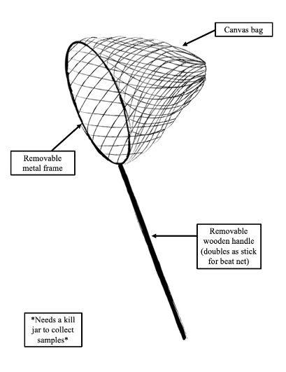
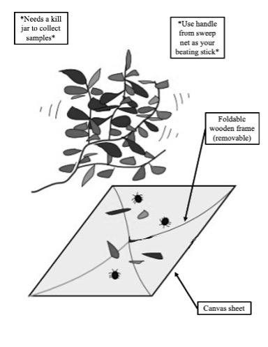
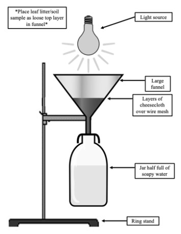
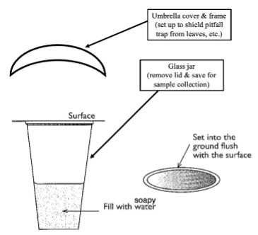
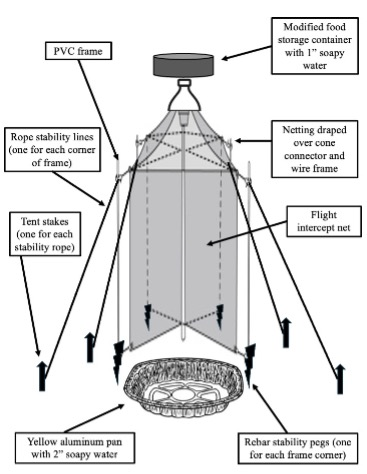
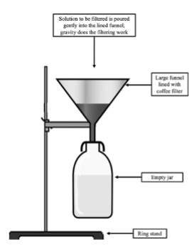

Week 4. Arthropod Sampling 2
Sept 24 & 25, 2024
wk04_sep24.RmdArthropod Sampling Continued
Remember to see the Week 3 agenda for the description of sampling design (number of groups, number of traps of different types)
NOTE: We are modifying the lab calendar as we have decided to expand this arthropod project for the duration of the semester. Keep checking in for details on schedule changes – basically, we’ll take more time than previously planned for this project.
Week 2 field work (Sept 24-25)
- Collect pitfall traps from last week; set to filter back in lab
- Re-deploy pitfall traps, round 2
- Deploy combo traps, round 1 [2 groups per lab section, each group deploys 1 trap, cover all four habitats between both lab sections]
- Collect sweep net & beat net samples in each habitat [every group]
- Collect leaf litter samples & set up Berlese funnel traps back in lab [every group, every habitat = 20 samples]
- Continue ID work on samples from last week
Field Bag Supplies for Arthropod Sampling
Materials Required
- Messenger field bags
- Field notebooks
- Arboretum map
- Measuring tape
- Permanent markers
- Pencils
- Ziplock baggies
- Funnel
- One pair of clippers
- Buckets for toting tools & traps
- Collection containers for wet samples
- Soapy water for setting pitfall & combo traps
- How to make soapy water: Add approximately 1 milliliter of dish soap to a full gallon of water. Replace jug cap and turn over to mix (avoid creating bubbles if possible).
- Mapping app on phone
- Level app on phone (iOS: “Measure” app; Android: Google search “Bubble level”)
Sweep Net Sampling
Materials Required
- Sweep net (assembled)
- Kill jar
- Mason jar
- Cotton ball
- Acetone or substitute
- Labelling tape
- Permanent marker

Procedure:
- Select a location from which to sample. Your group is assigned a general area. Choose a random starting location within that parameter.
- Label a kill jar with the following information: Lab day, Group number, Habitat information, Trap type (=Sweep net), Date.
- Determine the direction of this transect.
- Run your measuring tape out to at least 15 meters.
- You will sample five times along this transect, stopping every 3 meters to sample. Drop a GPS pin to identify each location within this transect. Share the GPS pins with your instructor.
- Assemble the sweep net. Add the frame/net component to the removable handle and lock the handle in place. Unfurl the net.
- Hold the net in your dominant hand.
- Place the sweep net slightly above and to the side of the shrub or tree or vegetation to be sampled
- “Sweep” across the vegetation in the same direction five times. Move quickly.
- Collect whatever arthropods have fallen into the net by placing them in the kill jar.
- Repeat on the transect as instructed for this sample (instructor will share details). Pool all collected arthropods into a single kill jar for the transect.
- Take your sample back to the lab and transfer into storage containers as directed. Be sure to transfer label information too. This sample is ready for identification.
Beat Net Sampling
Materials Required
- Beat net (assembled)
- Beating stick (use handle from sweep net)
- Kill jar (one for each sample to be collected)
- Mason jar
- Cotton ball
- Acetone or substitute
- Labelling tape
- Permanent marker

Procedure:
- Select a location from which to sample. Your group is assigned a general area. Choose a random starting location within that parameter.
- Label a kill jar with the following information: Lab day, Group number, Habitat information, Trap type (=Beat net), Date.
- Determine the direction of this transect.
- Run your measuring tape out to at least 15 meters.
- You will sample five times along this transect, stopping every 3 meters to sample. Drop a GPS pin to identify each location within this transect. Share the GPS pins with your instructor.
- Unfold the beat net and add the wooden frame. Orient the net so that the sheet is facing up with the frame facing down.
- Place the beat net under the shrub or tree or vegetation to be sampled.
- Use the removable handle from a sweep net to “beat” the vegetation five times. Use about 50% of your strength.
- Collect whatever arthropods have fallen to the sheet by placing them in the kill jar.
- Repeat on the transect as instructed for this sample (instructor will share details). Pool all collected arthropods into a single kill jar for the transect.
- Take your sample back to the lab and transfer into storage containers. Be sure to transfer label information too. This sample is ready for identification.
Berlese Funnel Sampling
Materials required for procuring sample:
- Ziploc baggie (one per sample)
- Permanent marker
- Digging tool (at least one)
- Trowel
- Shovel

Procedure:
- Select a location from which to sample.
- Label a Ziploc baggie with the following information: Lab day, Group number, Habitat information, Trap type, Date.
- Scoop leaf litter and surface soil from your location (approximately 1-2” depth of surface soil and whatever leaf litter is on top of that, from an area approximately 6” square).
- Place leaf litter/soil sample into the Ziplock baggie and seal it.
- Drop a GPS pin to identify the location of this trap. Share the GPS pin with your instructor.
- Take your sample back to the lab. This sample is ready for funneling.
Materials required for setting up funnel:
- Leaf litter/soil samples
- Mason jar labeled with sample information (save lid for later use)
- Soapy water
- Large funnel
- 6”x6” square of wire mesh
- 6”x6” squares of cheesecloth (3-4)
- Light source (clip-on, if possible) – placed 6” from top layer of leaf litter for 24 hours
- Ring stand with ring
Procedure:
- Set the lid of the jar aside for use later in the week.
- Carefully assemble the Berlese funnel apparatus according to the image above.
- Gently place the sample you took in the field into the top of the funnel.
- Place the light source approximately 6” away from the leaf litter layer and turn it on.
- Label both your apparatus on the base of the ring stand and your jar of soapy water with the following information: Lab day, Group number, Habitat information, Trap type (=Berlese), Date.
- After 48 hours, you will collect these samples. Do so replacing the lid to the jar. Disassemble your funnel and dispose of your sample as instructed. This sample is ready for filter processing.
Pitfall Trap Sampling
Materials Required
For setting up this trap:
- Pitfall trap (jar with lid)
- Umbrella cover for trap
- Soapy water
- Flagging tape
- Digging tool (at least one)
- Trowel
- Shovel
- Soil corer
- Waterproof nametags w/ contact info for traps left out

Procedure:
- Select a location from which to sample.
- Set the lid of the jar aside for use next week.
- Dig a hole deep and wide enough to fully submerge your jar such that the lip of the jar is level with the surrounding surface.
- Backfill around the jar so that the jar is secured and sits level. There should be no barriers to arthropods; they should be able to crawl up (and into) the trap. Use your phone’s leveling app if necessary. Be careful not to let dirt fall into the jar, as this will complicate processing of your sample later on.
- Disguise the trap by adding some leaf litter around it so that it appears to match the neighboring ground.
- Gently place the umbrella cover directly above the jar to act as a barrier for falling debris and rain. Secure the umbrella cover by pressing it into the ground a few inches.
- Add flagging tape on a nearby shrub or tree to help you find the trap again one week from now.
- Add the contact information card to the flagging tape to notify passersby not to disturb the trap.
- Drop a GPS pin to identify the location of this trap. Share the GPS pin with your instructor.
- After one week, you will collect these samples. Do so by carefully removing the jar from the ground, replacing the lid, and labelling it with the following information: Lab day, Group number, Habitat information, Trap type (=Pitfall trap), Date. Fill the hole in as best you can and remove the flagging tape.
- Take your sample back to the lab. This sample is ready for filter processing.
Malaise Combo Flight Intercept Trap Sampling
Materials Required
Parts of Combo Trap
- Mini Bungee cords for keeping PVC parts together during transport (3-4 per trap)
- Top trap: Modified storage container
- Bottom trap: Aluminum roaster pan spraypainted yellow
- Nose cone apparatus
- Funnel portion of 2-liter soda bottle (connects cone net to top trap)
- 54” square piece of white tulle netting
- Binder clips to anchor netting
- Field flags (wire frame for supporting nose cone)
- Rubber bands (stabilizes netting)
- Intercept net & frame
- Four pieces of 3/4” PVC and
- Four 3-prong PVC connectors
- Intercept net (white tulle netting reinforced with hem tape)
- 4 pieces of pink rebar (stabilizes intercept net frame)
- Rope stability lines: 4 lengths, each 8’-10 each
- 4 tent stakes: One per stability line
- Soapy water
- Flagging tape
- Hammer or mallet
- Containers for collecting combo trap samples to carry back to lab: Separate collection jars for top vs bottom traps
- Waterproof nametags w/ contact info for traps left out

Procedure:
- Select a location from which to sample.
- Assemble the combo trap. Your instructor or TA will be available to assist.
- Once complete, the trap must be as level as possible to stabilize the top trap. Use your phone’s leveling app if necessary.
- Carefully add soapy water to the top (1” depth) and bottom (2” depth) traps. Be careful not to let dirt or debris fall into the traps, as this will complicate processing of your sample later on. Adjust the trap for stability as necessary.
- Add flagging tape on a nearby shrub or tree to help you find the trap again one week from now.
- Add the contact information card to the flagging tape to notify passersby not to disturb the trap.
- Drop a GPS pin to identify the location of this trap. Share the GPS pin with your instructor.
- After one week, you will collect these samples.
- Bottom trap: Carefully pour the soapy water/arthropod mixture into a collecting jar. Label the jar with the following information: Lab day, Group number, Habitat information, Trap type (=Combo trap), Trap component (=Top trap or Bottom trap), Date.
- Top trap: Do so by carefully removing the jar from the ground, replacing the lid, and labelling it with the following information: Lab day, Group number, Habitat information, Trap type (=Combo trap), Trap component (=Top trap or Bottom trap), Date.
- Remove the flagging tape from the area and carefully disassemble the trap.
- Take your sample back to the lab. This sample is ready for filter processing.
Processing & Identification of Arthropod Samples
Materials Required
For filter processing samples:
- Sample will be preserved in soapy water in Mason jar (with lid) or other container
- Coffee filter
- Large funnel
- Ring stand with ring
- Glass stirring rod(s)
- Water in squirt bottles to wet filters/speed filtering
- Note: Pitfall trap and Berlese funnel samples can be slow to filter if contaminated with dirt; carefully use glass rod to break up clumps

Filtering procedure:
- Carefully assemble the filtering apparatus according to the image at right.
- Gently pour your soapy water/arthropod sample into the funnel. The goal here is to extract your arthropod specimens and remove the solution.
- Discard the filtered solution (may be done partway through your filtering process depending on how much solution you have).
- Transfer your arthropod samples to temporary sorting trays labelled with the following information: Lab day, Group number, Trap type, Habitat information, Date. Avoid transferring dirt and debris if possible. You may wish to let your samples dry before transferring them.
For identification process:
- Ethanol in squirt bottles to break up dirt clumps/clean specimens
- Stereoscope
- Stereoscope camera attachment
- Tools for manipulating specimens (probe, ultra-fine forceps, ultra-fine paintbrushes, cardstock or index cards)
- Labelling tape
- Sorting trays (4)
- Storage box
- ID books and other sources (websites, etc.)
Collaborative Data Set
The entire class is contributing data toward one large, collaborative data set. Your group will have the freedom to use subsets of that data to answer your own questions.
Some of the data in this set are categorized as explanatory variables (E) and others are response variables (R). Which are which?
Categories in this data set:
| Lab Day | Group Number | Habitat Type | Trap Type | Date | Trap | Set | Date Trap Collected | Order |
|---|---|---|---|---|---|---|---|---|
| ? | ? | ? | ? | ? | ? | ? | ? | ? |
Options:
Lab Day = Tues or Wed
Group number = 1, 2, 3, 4, or 5
Habitat type = Forest edge, forest interior, riparian, open field
Trap type = Sweep net, beat net, pitfall trap, Berlese funnel, combo trap